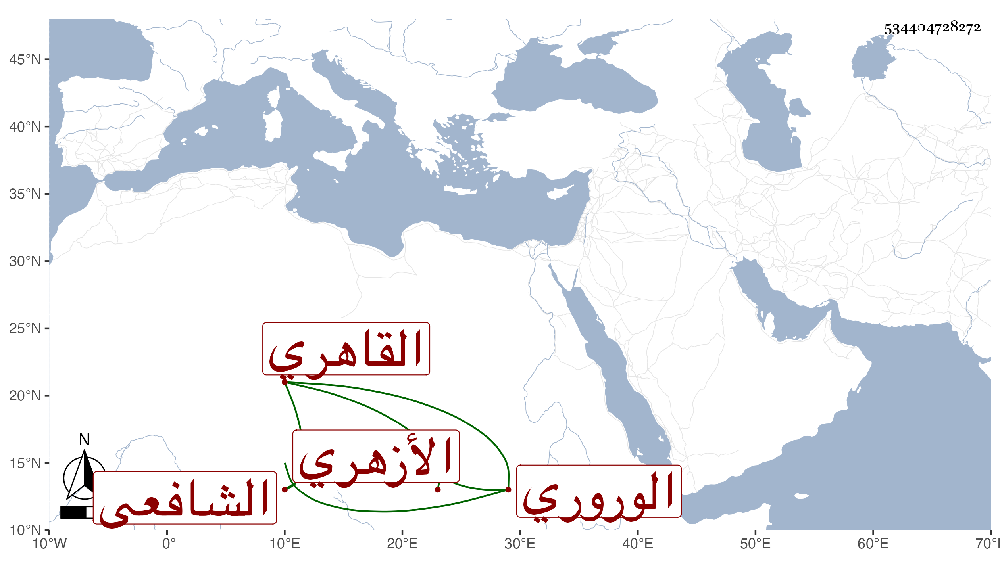

0902Sakhawi.DawLamic.ITO20230111-ara1.EIS1600.534404728272
Biography ID: 534404728272
690
محمد بن عمر بن عيسى بن أبي بكر البدر بن السراج الوروري الأصل القاهري الأزهري الشافعي أخو عبد القادر الماضي وأبوهما . ولد تقريبا سنة خمسين وثمانمائة ونشأ فحفظ القرآن والمنهاجين الفرعي والأصلي وألفية ابن ملك وقرأ على أبيه قليلا ثم لازم أخاه في الفقه والعربية وغيرهما والشرواني في شرح العقائد والمنطق وتميز فيهما بحيث كتب على أولهما حاشية وأقرأ بعض الطلبة وتنزل في تربة الأشرف قايتباي وهو ممن سمع ختم البخاري بالظاهرية مع سكونه وفضله وإدمانه على الاشتغال .
